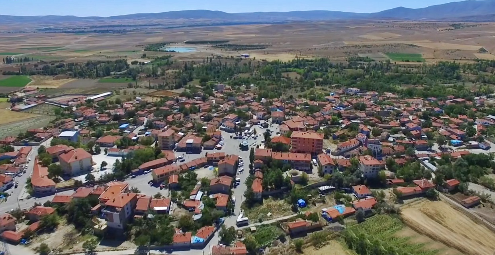

GÜNYÜZÜ
Günyüzü, İç Anadolu Bölgesi'nde Eskişehir iline bağlı bir ilçedir.
TARİHİ
Hititler ve Roma döneminde bazı küçük yerleşim birimleri olsa da bölgede
ilk yerleşim Anadolu’da ilk Türk uygarlığı olan Selçuklu Hanedanının Sivrihisar’a 1072 yılında yerleşmesi ile birlikte başlar.
1289'da Osmanlı Devleti'nin Sivrihisar'ı ele geçirmesinden sonra Osman Bey, bütün Eskişehir çevresinin idaresini kardeşi Gündüz Bey'e vermiştir.
3000 kadar Türkmen aşireti çevreye yerleştirilmiştir. Yörük Türkmen gelenekleri bölgede hâkim kültürdür.
Bölgede: Sivrihisar'ın Karkın köyü ile Günyüzü’nün Beydili ve Yörme arasına Karkın aşireti; Günyüzü’ndeki Bedil Köyüne, Beydili aşireti;
Yazır köyüne Yazır aşireti; Ayvalı yaylasına Buğdüz aşireti; Sivrihisar'ın merkez Kılıç Mahallesi ile Günyüzü'nün Gecek köyüne ise Kılıç aşireti iskan edilmiştir
. Cumhuriyet öncesinde Kozağacı adıyla köy olan Günyüzü,
1932 yılında bucak (nahiye) olmuş, 29 Şubat 1972 tarihinde belediye teşkilatı oluşturulmuş,
20 Mayıs 1990 tarih ve 20523 sayılı Resmî Gazete'de yayınlanan 3644 sayılı kanunla müstakil bir ilçe olmuş ve 6 Ağustos 1991 tarihinde resmen çalışmaya başlamıştır.
Osmanlı arşiv belgelerinden XVI. yüzyılda Sultanönü sancağı ve Eskişehir için yapılan araştırmada;
Günyüzü nahiyesinde bulunan dirliklerin tamamı tımarlı sipahi idi.
İnönü kazasında 21 tımar, Günyüzü nahiyesinde ise 9 tımar bulunuyordu.
ve Ayrıca, Günyüzü Tabi-i Sivrihisar Sultanönü sancağı Serpiyade'sine bağlı olan nahiyedir
bilgileri verilir. Günyüzü nahiyesinden bir dönem de İsaklı nahiyesine göç edenler olmuştur.

Han İlçesi Hakkında Bilgi Almak İçin Tıklayınız.
Anasayfaya Dönmek için Tıklayınız.